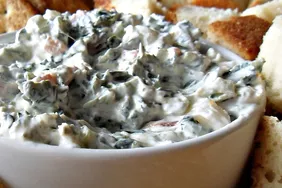

Return back
Recipe for Spinach

- Ingredients
These are the ingredients you'll need to make this homemade spinach dip recipe:
- Sour cream and mayonnaise: This rich and creamy spinach dip starts with a blend of sour cream and mayo.
- Frozen spinach: You'll need a thawed and drained bag of frozen spinach.
- Water chestnuts: A can of drained and chopped water chestnuts add welcome texture. If you don't like water chestnuts, you can leave them out.
- Soup mix: A package of dry leek soup mix takes the flavor up a notch.
- Sourdough bread: For the bread bowl!
- Recipe
- Preheat the oven to 350 degrees F (175 degrees C). Lightly grease a small baking dish.
- Mix cream cheese, mayonnaise, Parmesan cheese, Romano cheese,
garlic, basil, garlic salt, salt, and pepper together in a medium bowl.
Gently stir in artichoke hearts and spinach.
- Transfer the mixture to the prepared baking dish; top with mozzarella cheese.
Bake in the preheated oven until bubbly and lightly browned, about 25 minutes.
Made by Mouaad